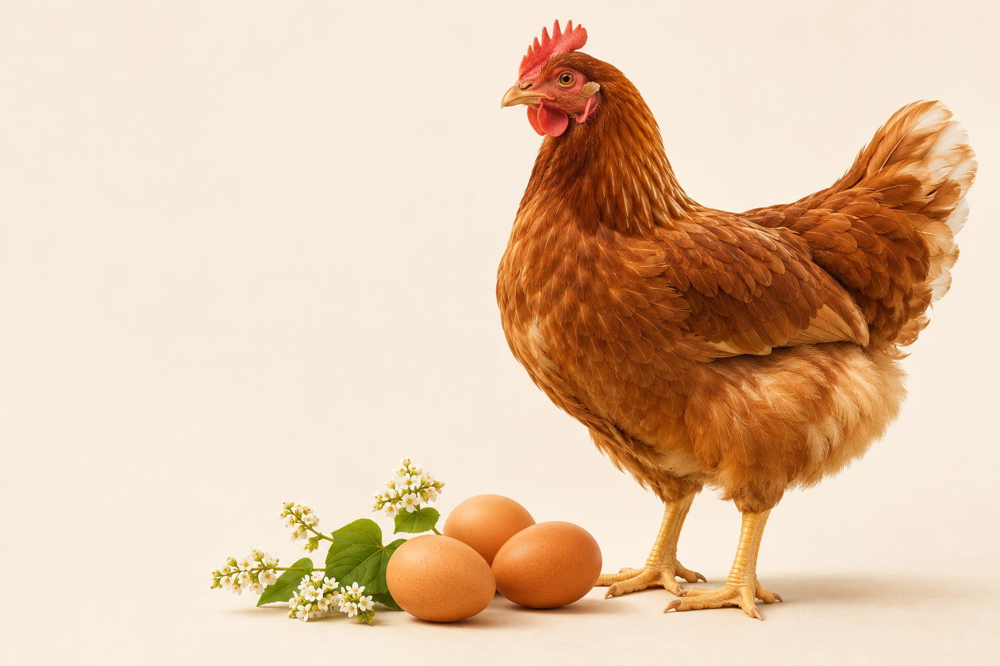
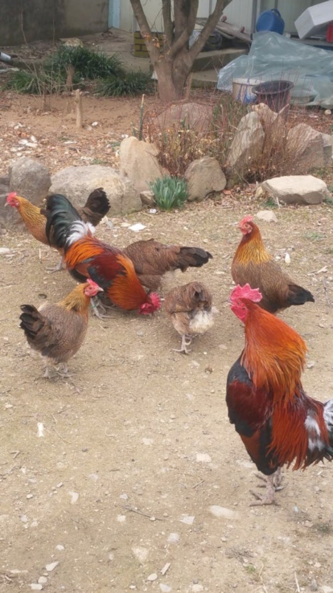
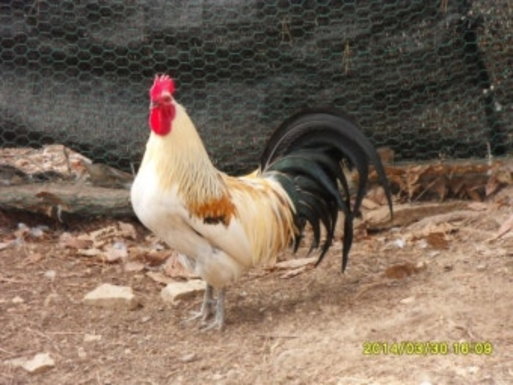

건강을 살피는 돌봄
닭 한 마리 한 마리의 건강을 소중히 여기며 매일 농장을 돌봅니다.
농장 이야기 ↗BONGPYEONG · SINHO FARM
닭이 편안한 하루를 보내도록.
가족의 식탁에 믿음이 닿을 수 있도록.
봉평 신호농산은 기본부터 정성껏 지킵니다.
자연을 가까이 · 품질을 소중히 · 약속을 끝까지


봉평에서01 / OUR STORY
신호농산은 봉평에서 닭을 키우는 농장입니다. 우리가 중요하게 여기는 것은 빠른 성장보다 매일의 건강, 화려한 말보다 꾸준한 관리입니다.
닭이 건강하고 편안해야 좋은 먹거리도 이어진다고 믿습니다. 그 믿음으로 하루하루 농장을 돌봅니다.

SINHO FARM / LEADERSHIP
신호농산 대표
신뢰 · 품질 · 꾸준한 돌봄
2022년 사업 시작
봉평 · 산란계 사육 및 유정란 생산
MEET OUR FARMER
새로운 도전으로 시작한 산란계 사업. 신현구 대표는 닭을 건강하고 편안하게 키우는 일과 고객의 신뢰를 신호농산 경영의 중심에 두고 있습니다.
“닭을 건강하고 편안하게 키운다.
품질과 타협하지 않는다.
고객과의 약속을 반드시 지킨다.”
가정 소비자와의 직거래를 넓히고 단골 고객과의 관계를 쌓아가며, 달걀의 품질과 신호농산의 가치를 높이고자 합니다. 장기적으로 공식 동물복지·친환경 인증 취득을 추진할 계획입니다.
신호농산 대표 신현구
✺ OUR EVERYDAY CARE
닭을 키우는 마음부터 달걀을 전하는 순간까지.
농장이 지켜가는 네 가지 생각입니다.
PHOTO JOURNAL
닭 한 마리, 함께하는 풍경까지.
사진을 누르면 크게 볼 수 있습니다.
닭장 풍경 사진에는 경향신문 표시가 있습니다. 참고 사진으로 구분해 소개합니다.
02 / OUR EGGS
한 알을 고르는 마음까지 생각합니다.
신호농산이 준비하는 유정란을 소개합니다.
건강한 닭을 기르는 일에서 시작해, 믿고 선택할 수 있는 달걀을 향해 나아갑니다.
03 / OUR PROMISE
닭을 건강하고 편안하게 키우는 것을 농장의 첫 번째 원칙으로 삼습니다.
먹거리를 만드는 사람의 책임을 기억하며, 품질 위에 타협하지 않습니다.
고객과 나눈 약속을 소중히 여기고, 꾸준한 정성으로 믿음을 쌓아갑니다.
04 / GOOD TO KNOW
신호농산은 봉평에서 닭을 키우고 있습니다.
현재 공식 동물복지·친환경 인증은 없습니다. 앞으로 인증 취득을 준비할 계획입니다.
판매 수량, 구성, 가격, 배송 가능 지역은 확인 후 안내할 예정입니다. 현재 홈페이지에는 주문·결제 기능이 연결되어 있지 않습니다.
첫 화면은 AI 제작 브랜드 연출 이미지입니다. ‘닭 사진 모음’에서는 보내주신 사진 5장을 볼 수 있으며, 신문사 표시가 있는 닭장 풍경은 참고 사진으로 구분했습니다.
FROM OUR FARM TO YOUR TABLE
신호농산 유정란 구매 안내를 준비하고 있습니다.
연락처와 판매 구성이 확정되면 이곳에서 안내드리겠습니다.